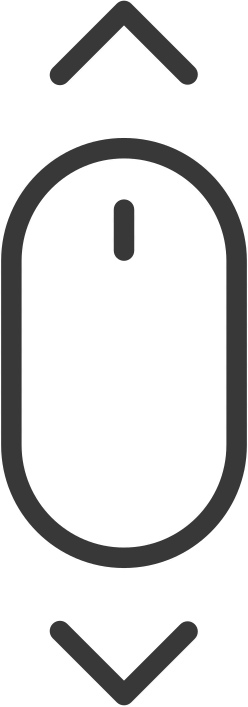
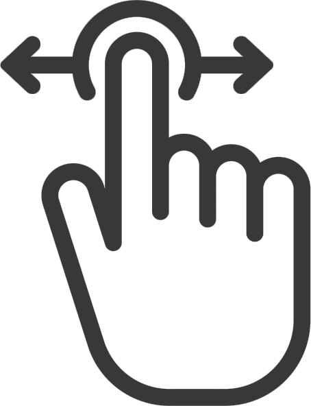

El escritor universal mario vargas llosa

Haz scroll hacia abajo para cambiar de imagen

Haz scroll hacia los lados para cambiar de imagen
Haz scroll hacia abajo para cambiar de imagen
Haz scroll hacia los lados para cambiar de imagen